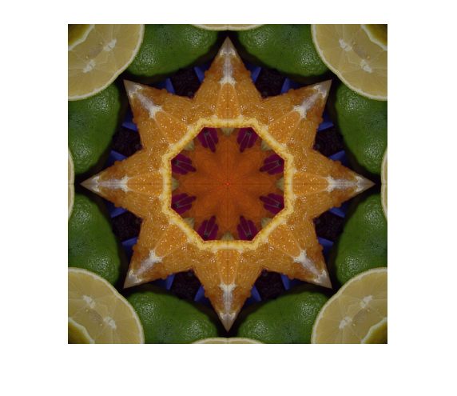

Contents
Kaleidoscopic Reflections
Inspired by: https://www.csh.rit.edu/~pat/hack/quickies/kaleid/
function kaleidoscope_demo(k, iters, doImg) % kaleidoscope options if nargin < 1, k = 4; end % n-folds (n=4*k) if nargin < 2, iters = 1; end % recursive level: 1, 2, .. if nargin < 3, doImg = true; end validateattributes(k, {'numeric'}, {'scalar', 'integer', '>=',1, '<=',4}, 1); validateattributes(iters, {'numeric'}, {'scalar', 'integer', 'positive'}, 2); validateattributes(doImg, {'numeric', 'logical'}, {'scalar', 'binary'}, 3); kaleidoscope = @(img) kaleidoscope_wrapper(img, k, iters); % run demo if doImg %img = imread(which('peppers.png')); %img = imread(fullfile(mexopencv.root(),'test','lena.jpg')); img = imread(fullfile(mexopencv.root(),'test','fruits.jpg')); demo_image(kaleidoscope, img); else cap = cv.VideoCapture(0); assert(cap.isOpened()); demo_video(kaleidoscope, cap); cap.release(); end end function demo_image(kaleidoscope, img) % input image must be square-sized sz = 400; img = cv.resize(img, [sz sz]); % animation by repeating a number of times hImg = imshow(img); for i=1:81 % sz/(10/2)+1 % each time offset the input image with wrap-around padding of = (i-1)*10; if true im = cv.copyMakeBorder(img, [of 0 0 of], 'BorderType','Reflect101'); im = im(1:end-of,of+1:end,:); else im = circshift(img, [of -of]); end % show kaleidoscope effect out = kaleidoscope(im); set(hImg, 'CData',out) drawnow end end function demo_video(kaleidoscope, cap) % video stream sz = 400; img = cap.read(); assert(~isempty(img)); img = cv.resize(img, [sz sz]); hImg = imshow(img); while ishghandle(hImg) % grab new frame img = cap.read(); if isempty(img), break; end img = cv.resize(img, [sz sz]); % show kaleidoscope effect out = kaleidoscope(img); set(hImg, 'CData',out) drawnow end end
Kaleidoscope functions
function out = kaleidoscope_4folds(img, flag) % take full image (pattern fills a square) out = img; % tile (mirror and repeat) this pattern 4 times to get 4-fold symmetry if nargin < 2 || flag, out = cv.rotate(out, '180'); end out = image_tile(out); end function out = kaleidoscope_8folds(img, flag) % extract wedge (divide square into 2 folds, take top one) sz = size(img, 1); % assumes a square image if true mask = zeros(sz, 'uint8'); mask = cv.fillConvexPoly(mask, [0 0; sz sz; sz 0], 'Color',255); else mask = triu(ones(sz, 'uint8') * 255); end q1 = image_crop(img, mask); % create other wedge (transpose and h-flip) q2 = cv.flip(cv.rotate(q1, '90CW'), 1); % merge the two wedges (pattern fills a square) out = image_merge(q1, q2); % tile (mirror and repeat) this pattern 4 times to get 8-fold symmetry if nargin < 2 || flag, out = cv.rotate(out, '180'); end out = image_tile(out); end function out = kaleidoscope_12folds(img, flag) % extract wedge (divide square into 3 folds, take middle one) sz = size(img, 1); % assumes a square image s = round(sz * tand(30)); mask = zeros(sz, 'uint8'); mask = cv.fillConvexPoly(mask, [0 0; s sz; sz sz; sz s], 'Color',255); q1 = image_crop(img, mask); % create other two wedges (transpose, h-flip, and rotate +/- 30 degrees) q = cv.flip(cv.rotate(q1, '90CW'), 1); q2 = image_rotate(q, -30); q3 = image_rotate(q, +30); % merge the three wedges (pattern fills a square) out = image_merge(image_merge(q1, q2), q3); % tile (mirror and repeat) this pattern 4 times to get 12-fold symmetry if nargin < 2 || flag, out = cv.rotate(out, '180'); end out = image_tile(out); end function out = kaleidoscope_16folds(img, flag) % extract wedge (divide square into 4 folds, take middle-top one) sz = size(img, 1); % assumes a square image s = round(sz * tand(22.5)); mask = zeros(sz, 'uint8'); mask = cv.fillConvexPoly(mask, [0 0; sz sz; sz s], 'Color',255); q1 = image_crop(img, mask); % create bottom wedge (rotate 45 degrees), and merge q2 = image_rotate(q1, -45); q12 = image_merge(q1, q2); % create other two wedges (transpose and h-flip), and merge q34 = cv.flip(cv.rotate(q12, '90CW'), 1); out = image_merge(q12, q34); % tile (mirror and repeat) this pattern 4 times to get 16-fold symmetry if nargin < 2 || flag, out = cv.rotate(out, '180'); end out = image_tile(out); end
Helper functions
function out = kaleidoscope_wrapper(img, k, iters) switch k case 1 kaleidoscope_nfolds = @kaleidoscope_4folds; case 2 kaleidoscope_nfolds = @kaleidoscope_8folds; case 3 kaleidoscope_nfolds = @kaleidoscope_12folds; case 4 kaleidoscope_nfolds = @kaleidoscope_16folds; end % build kaleidoscope out = kaleidoscope_nfolds(img); for n=2:iters % apply recursively for more fun out = kaleidoscope_nfolds(out, false); end end function out = image_crop(img, mask) if true out = cv.copyTo(img, 'Mask',mask); elseif true out = cv.bitwise_and(img, uint8(255), 'Mask',mask); else out = bsxfun(@times, img, uint8(mask~=0)); end end function out = image_rotate(img, angl) T = cv.getRotationMatrix2D([0 0], angl, 1); out = cv.warpAffine(img, T); end function out = image_merge(img1, img2) if true out = cv.bitwise_or(img1, img2); elseif true out = cv.addWeighted(img1,1, img2,1, 0); else out = img1 + img2; end end function out = image_tile(img) % downsample first so that output has same size as input out = cv.resize(img, 0.5, 0.5, 'Interpolation','Area'); out = [out, cv.flip(out, 1)]; out = [out; cv.flip(out, 0)]; end